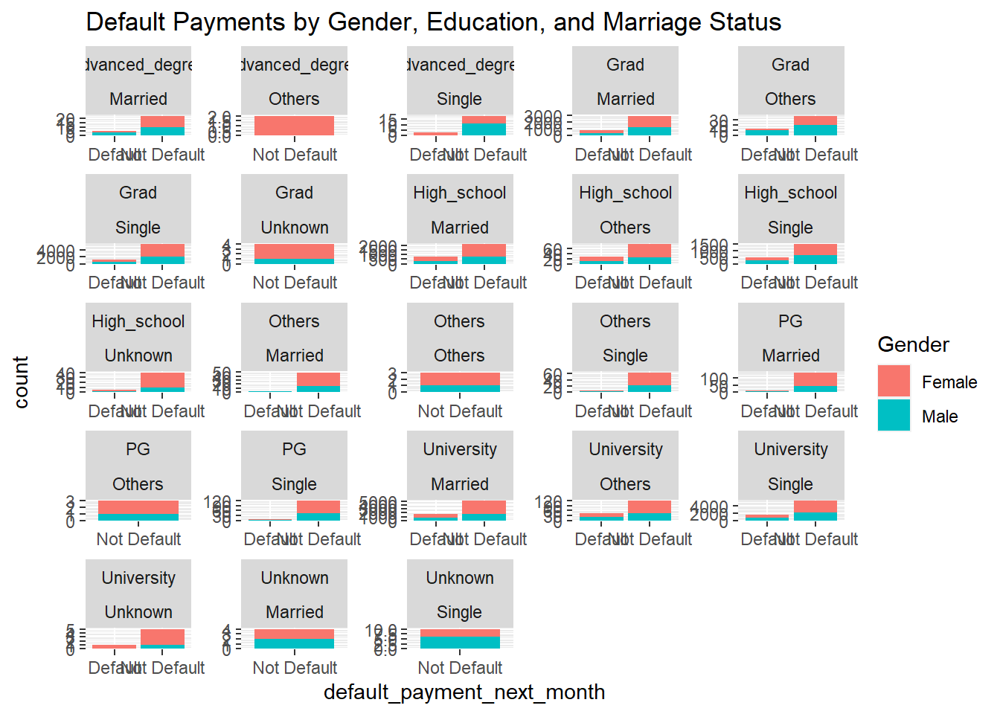
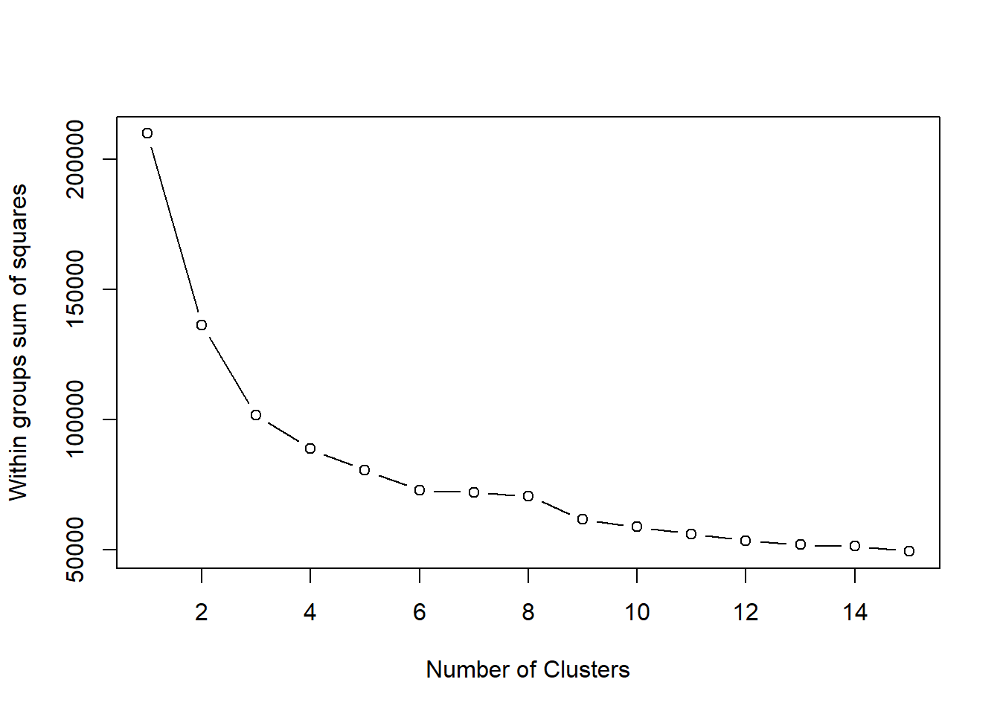

Do certain demographic groups have a higher or lower likelihood of defaulting on credit card payments, and can this be predicted using regression models?
Code:
# Load necessary librarieslibrary(readr) # For data readinglibrary(dplyr) # For data manipulation
Attaching package: 'dplyr'
The following objects are masked from 'package:stats':
filter, lag
The following objects are masked from 'package:base':
intersect, setdiff, setequal, union
library(ggplot2) # For data visualizationlibrary(caret) # For machine learning models
Loading required package: lattice
# Read the datasetcredit_data <-read.csv("C:\\Users\\nmadh\\OneDrive\\Desktop\\Final Project\\Final_output.csv")# 1. Preprocess the data# Convert categorical variables to factorscredit_data$Gender <-as.factor(credit_data$Gender)credit_data$Education <-as.factor(credit_data$Education)credit_data$Marriage <-as.factor(credit_data$Marriage)credit_data$default_payment_next_month <-as.factor(credit_data$default_payment_next_month)# Check for missing valuessum(is.na(credit_data))
[1] 0
# 2. Explore the data# Visualize default payments across different demographic groupsplot1 =ggplot(credit_data, aes(x = default_payment_next_month, fill = Gender)) +geom_bar() +facet_wrap(~ Education + Marriage, scales ="free") +labs(title ="Default Payments by Gender, Education, and Marriage Status")plot1

# 3. Train regression models# Split the data into training and testing setsset.seed(123) # For reproducibilitytrain_index <-createDataPartition(credit_data$default_payment_next_month, p =0.7, list =FALSE)train_data <- credit_data[train_index, ]test_data <- credit_data[-train_index, ]# Train logistic regression modellogit_model <-glm(default_payment_next_month ~ ., data = train_data, family = binomial)# 4. Evaluate model performance# Make predictions on the test setpredictions <-predict(logit_model, newdata = test_data, type ="response")predicted_classes <-ifelse(predictions >0.5, "Default", "Not Default")# Confusion matrixconfusionMatrix(table(predicted_classes, test_data$default_payment_next_month))
Confusion Matrix and Statistics
predicted_classes Default Not Default
Default 1508 6795
Not Default 482 214
Accuracy : 0.1914
95% CI : (0.1833, 0.1996)
No Information Rate : 0.7789
P-Value [Acc > NIR] : 1
Kappa : -0.0991
Mcnemar's Test P-Value : <2e-16
Sensitivity : 0.75779
Specificity : 0.03053
Pos Pred Value : 0.18162
Neg Pred Value : 0.30747
Prevalence : 0.22114
Detection Rate : 0.16757
Detection Prevalence : 0.92266
Balanced Accuracy : 0.39416
'Positive' Class : Default
Research Question 2:
Which features are deemed most important in predicting credit default risk?
Warning: package 'randomForest' was built under R version 4.3.3
randomForest 4.7-1.1
Type rfNews() to see new features/changes/bug fixes.
Attaching package: 'randomForest'
The following object is masked from 'package:ggplot2':
margin
The following object is masked from 'package:dplyr':
combine
# Set seed for reproducibilityset.seed(1234)# Train the Random Forest modelrf_model <-randomForest(default_payment_next_month ~ ., data = data)# Get variable importance measuresimportance <-importance(rf_model)# Sort variable importance measures by importancevar_importance <- importance[order(-importance[, 1]), ]# Display variable importance measuresprint(var_importance)
The output shows the importance of different variables in predicting credit default risk. Repayment behavior in previous months, represented by variables like Repay_Sept, has the highest importance, indicating its strong influence on predicting default. Billing and payment amounts also contribute to prediction but to a lesser extent. Demographic variables like Age have some importance, while Customer ID has limited predictive power. Overall, understanding these factors helps in assessing credit risk and making informed decisions.
Identify the distinct patterns of credit limit utilization among users.
Code:
# Load necessary librarieslibrary(cluster)# Load the datasetcredit_data <-read.csv("C:\\Users\\nmadh\\OneDrive\\Desktop\\Final Project\\Final_output.csv")# Step 2: Select relevant columns for clusteringdata_for_clustering <- credit_data[, c("Limited_Bal", "Repay_Apr", "Repay_May", "Repay_Jun", "Repay_Jul", "Repay_Aug", "Repay_Sept")]# Step 3: Standardize the datascaled_data <-scale(data_for_clustering)# Step 4: Determine optimal number of clusters using elbow methodwss <- (nrow(scaled_data)-1) *sum(apply(scaled_data, 2, var))for (i in2:15) wss[i] <-sum(kmeans(scaled_data, centers=i)$withinss)plot(1:15, wss, type="b", xlab="Number of Clusters", ylab="Within groups sum of squares")

# Step 5: Based on the elbow plot, select the number of clusters (e.g., 3)num_clusters <-3# Step 6: Perform K-means clusteringkmeans_result <-kmeans(scaled_data, centers=num_clusters)# Step 7: Assign cluster labels to each usercluster_labels <- kmeans_result$cluster# Step 8: Add cluster labels to the original datasetcredit_data_with_clusters <-cbind(credit_data, cluster = cluster_labels)# Step 9: Get the cluster centerscluster_centers <- kmeans_result$centers# Step 10: Calculate standard deviations across columnscol_std_dev <-apply(data_for_clustering, 2, sd)# Step 11: Scale the cluster centers by dividing by standard deviationscluster_centers <-scale(cluster_centers, center =FALSE, scale = col_std_dev)# Step 12: Assign column names to cluster_centerscolnames(cluster_centers) <-colnames(data_for_clustering)# Step 13: View cluster centersprint(cluster_centers)
# Visualization (Optional):# Plot clusters based on the first two principal componentspca_data <-prcomp(scaled_data, center =TRUE, scale. =TRUE)plot(pca_data$x[, 1], pca_data$x[, 2], col = cluster_labels, pch =20, main ="Clusters based on Credit Utilization Patterns", xlab ="Principal Component 1", ylab ="Principal Component 2")legend("topright", legend =unique(cluster_labels), col =unique(cluster_labels), pch =20, title ="Cluster")